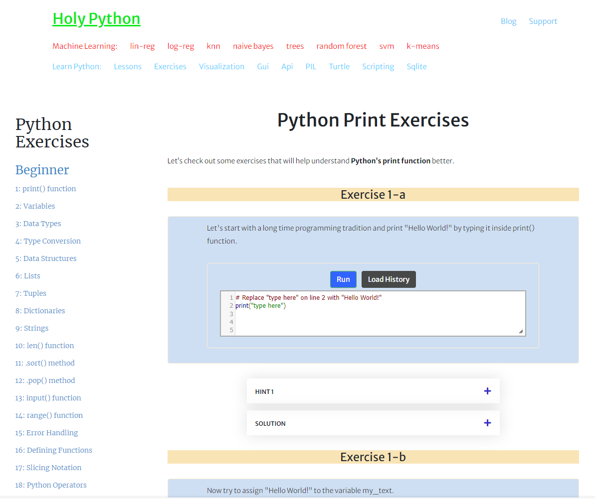
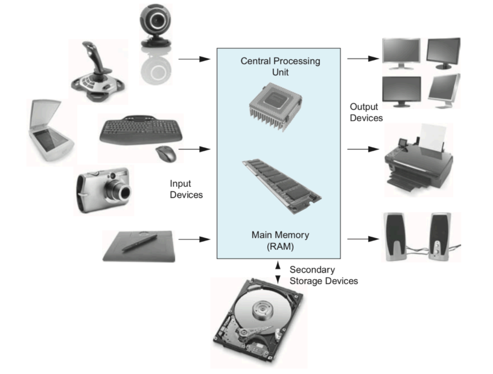
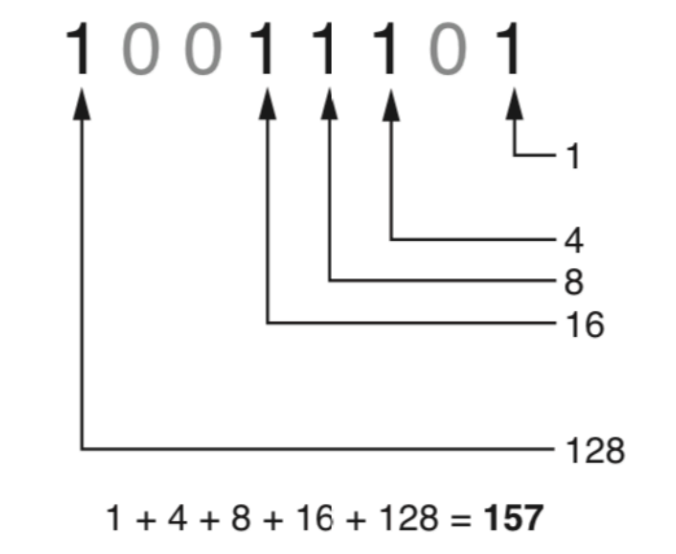
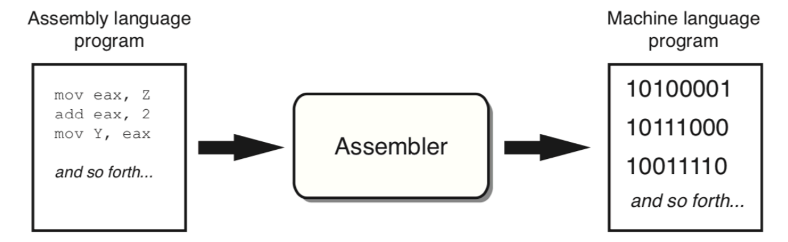
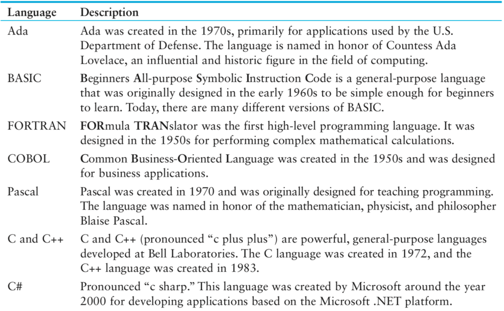
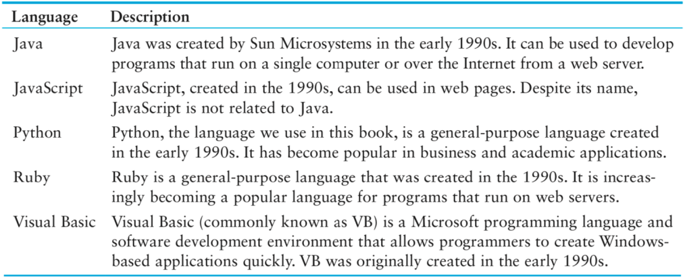
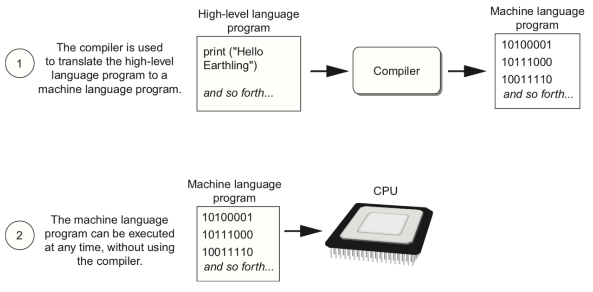
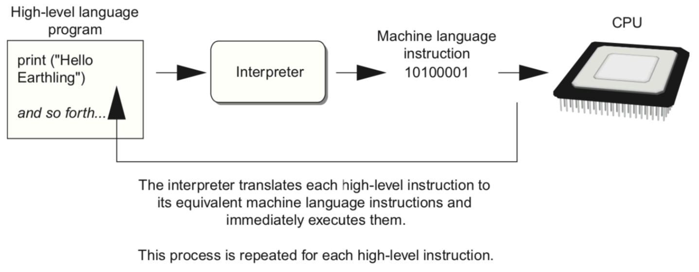
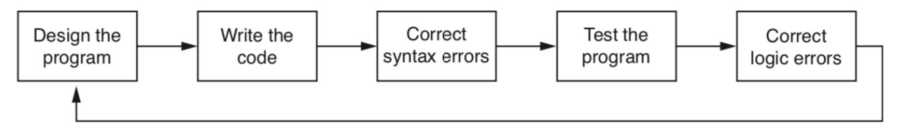

Print Command
- Print String
- Print Numeric
- Print String + Numeric
- Print String + String
- Print Numeric + Numeric
Print String
print("Hello World")
Hello Worldprint("Information and Network Engineering")
Information and Network Engineeringprint("Hello Anirach you will be success")
Hello Anirach you will be successprint("I'm hungry")
I'm hungryprint('He ask me "Who got the book?"')
He ask me "Who got the book?"print("I'm good and \"I will do my best\"")
I'm good and "I will do my best"print('/\\')
/\print('\ta\na\ta\ta\n\ta')
a
a a a
aprint('''\ta a\ta\ta \ta'''
a a a
a
Print Numeric
print('100.00')
100.00print('%d' %100)
100print('%d' %100.58)
100print('%f' %-100.89)
-100.890000print('%.2f' %100.89)
100.89from math import pi
print('%.2f' %pi)
3.14from math import pi
print('%.4f' %pi)
3.1416from math import pi
print('%.50f' %pi)
3.14159265358979311599796346854418516159057617187500
Print String + Numeric
print('My age is', 25,'I have', 3500.50,'Bth.')
My age is 25 I have 3500.5 Bth.print('My age is %d I have %.2f Bth.' %(25,3500.50))
My age is 25 I have 3500.50 Bth.print('My age is' + str(25)+' I have '+ str(3500.50)+' Bth.')
My age is 25 I have 3500.5 Bth.print('5+4 =',5+4)
5+4 = 9print('5+4 = %.2f' %(5+4))
5+4 = 9.00print('5+4 = ' + str(5+4))
5+4 = 9
Print String + String
print("I'm Anirach","I'll keep practicing!")
I'm Anirach I'll keep practicing!print("I'm Anirach" + "I'll keep practicing!"
I'm Anirach I'll keep practicing!
Print Numeric + Numeric
print(1, 1, 2, 3, 5, 8, 13, 21, 34, 55)
1 1 2 3 5 8 13 21 34 55print('%d %d %d %d %d %d %d %d %d %d' %(1, 1, 2, 3, 5, 8, 13, 21, 34, 55))
1 1 2 3 5 8 13 21 34 55
Print() Exercises
Computer and Programming
Before we begin exploring the concepts of programming, you need to understand a few basic things about computers and how they work.
The physical devices that a computer is made of are referred to as the computer's hardware. The programs that run on a computer are referred to as software.
Computers can do such a wide variety of things because they can be programmed. This means that computers are not designed to do just one job, but to do any job that their programs tell them to do. A program is a set of instructions that a computer follows to perform a task.
Software
System software
- Operating Systems: Windows, Mac OS, Linux
- Utility Programs: Back up, Virus scanners, Compression
- Software Development: Assemblers, Compilers, Interpreter
Application software
- Microsoft word, PowerPoint, Pages, Editor, Photoshop
How Computer Store DATA
All data that is stored in a computer is converted to sequences of 0s and 1s.
A computer's memory is divided into tiny storage locations known as bytes. One byte is only enough memory to store a letter of the alphabet or a small number. In order to do anything meaningful, a computer has to have lots of bytes. Most computers today have millions, or even billions, of bytes of memory.

How Programs Work
A computer's CPU can only understand instructions that are written in machine language. Because people find it very difficult to write entire programs in machine language, other programming languages have been invented. The CPU is an electronic device that is designed to do specific things. In particular, the CPU is designed to perform operations such as the following:
- Reading a piece of data from main memory
- Adding two numbers
- Subtracting one number from another number
- Multiplying two numbers
- Dividing one number by another number
- Moving a piece of data from one memory location to another
- Determining whether one value is equal to another value
Fetch-Decode-Execute Cycle

Assembly language
# low-level language
The first assembly language was most likely that developed in the 1940s at Cambridge University for use with a historic computer known as the EDSAC
high level language
In the 1950s, a new generation of programming languages known as high-level
languages began to appear. A high-level language allows you to create
powerful
and complex programs without knowing how the CPU works and without writing
large numbers of low-level instructions. In addition, most high-level languages use
words that are easy to understand. For example, if a programmer were using
COBOL (which was one of the early high-level languages created in the 1950s), he
or she would write the following instruction to display the message Hello world on
the computer screen:
DISPLAY "Hello world"
Python is a modern, high-level programming language that we will use in this
course. In Python you would display the message Hello world with the following
instruction:
print('Hello world')
programming language
 Compiler
Interprete
Program Design
Program development cycle
Programs must be carefully designed before they are written. During the design process, programmers use tools such as pseudocode and flowcharts to create models of programs.
Designing a Programming language
The process of designing a program is arguably the most important part of the cycle. You can think of a program's design as its foundation. If you build a house on a poorly constructed foundation, eventually you will find yourself doing a lot of work to fix the house! A program's design should be viewed no differently. If your program is designed poorly, eventually you will find yourself doing a lot of work to fix the program.
The process of designing a program can be summarised in the following two steps:
- Understand the task that the program is to perform.
- Determine the steps that must be taken to perform the task.
Task and Steps Example
For example, suppose someone asks you how to boil water. You might break down that task into a series of steps as follows:
- Pour the desired amount of water into a pot.
- Put the pot on a stove burner.
- Turn the burner to high.
- Watch the water until you see large bubbles rising. When this happens, the water is boiling.
This is an example of an algorithm, which is a set of well-defined logical steps that must be taken to perform a task. Notice that the steps in this algorithm are sequentially ordered. Step 1 should be performed before step 2, and so on. If a person follows these steps exactly as they appear, and in the correct order, he or she should be able to boil water successfully.
A programmer breaks down the task that a program must perform in a similar way. An algorithm is created, which lists all of the logical steps that must be taken. For example, suppose you have been asked to write a program to calculate and display the gross pay for an hourly paid employee. Here are the steps that you would take:
- Get the number of hours worked.
- Get the hourly pay rate.
- Multiply the number of hours worked by the hourly pay rate.
- Display the result of the calculation that was performed in step 3.
Of course, this algorithm isn't ready to be executed on the computer. The steps in this list have to be translated into code. Programmers commonly use two tools to help them accomplish this: pseudocode and flowcharts. Let's look at each of these in more detail.
Pseudocode
The word “pseudo” means fake, so pseudocode is fake code. It is an informal language that has no syntax rules and is not meant to be compiled or executed. Instead, programmers use pseudocode to create models, or “mock-ups,” of programs. Because programmers don't have to worry about syntax errors while writing pseudocode, they can focus all of their attention on the program's design. Once a satisfactory design has been created with pseudocode, the pseudocode can be translated directly to actual code.
Input the hourse worked Input the hourly pay rate calculate gross pay as hours worked Multiplied by pay rate display the gross pay
Flowchart
Flowcharting is another tool that programmers use to design programs. A flowchart is a diagram that graphically depicts the steps that take place in a program.Notice that there are three types of symbols in the flowchart: ovals, parallelograms, and a rectangle. Each of these symbols represents a step in the program, as described here:
- The ovals, which appear at the top and bottom of the flowchart, are called terminal symbols. The Start terminal symbol marks the program's starting point and the End terminal symbol marks the program's ending point.
- Parallelograms are used as input symbols and output symbols. They represent steps in which the program reads input or displays output.
- Rectangles are used as processing symbols. They represent steps in which the program performs some process on data, such as a mathematical calculation.